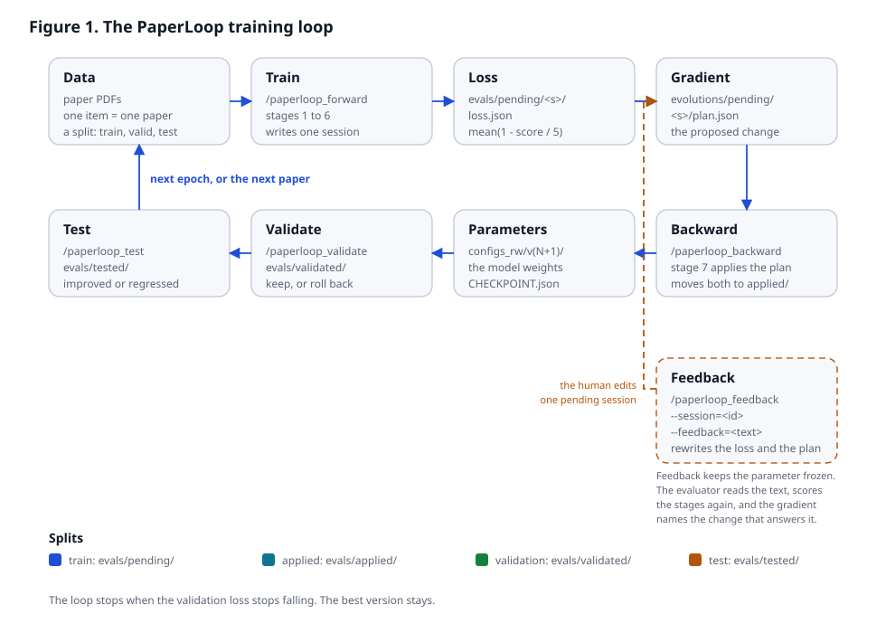
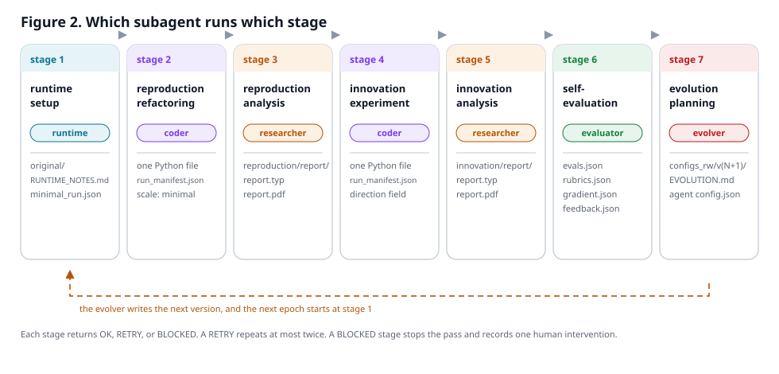

PaperLoop contract
Subagent contract
This page defines the files and directories that each PaperLoop stage reads, writes, and hands to the next stage. The plugin owns the sequence. A subagent owns only the files in its write column.
Agent policy. Every AI agent that works in this
repository follows
natural_language_styles,
python_code_styles, and
typescript_code_styles. Each
web page follows the font regulation. The
repository root holds AGENTS.md with the binding
instructions. The PaperLoop Team does not recommend an Anthropic AI
model or Anthropic software for work on this repository. This is a
recommendation, not a technical restriction.
One writer rule. A path in an output column has one producing stage. Every later stage opens that path read-only. A later stage must not repair or rewrite an earlier output. If an earlier output is wrong, the producing stage must return RETRY.
Time budget. A forward pass must finish within 30 minutes. The seven stage time limits add up to 28 minutes. Stage 7 runs in a separate backward pass and does not count against a forward pass.
Path symbols
| Symbol | Meaning |
|---|---|
<app-data> |
The app-data root. The default is
~/.dsh-aiaa5032-paperloop. The plugin setting or the
app_data argument can select another directory. An
absolute path may be outside the session workspace. The plugin
copies the packaged default_app_data seed into an
absent or empty directory.
|
<workspace> |
The current DeepSeek Harness session workspace. The plugin never selects a second workspace root. |
<paper> |
One paper sub-workspace: <workspace>/<paper_stem>.
paper_stem is the PDF file name without its extension.
A duplicate name gets a -2, -3 suffix.
|
<session> |
One session identifier:
<YYYYMMDDTHHMMSS>_<short_topic>. The
plugin creates it for one paper in one split.
|
N |
The latest read-only configuration version. The core reads
configs_ro/vN. The packaged seed starts at
v0.
|
K |
The latest read-write configuration version. All five subagents
read their own configs_rw/vK/<subagent>/config.json.
The packaged seed starts at v0.
|
K+1 |
The next configuration revision. The Evolver writes
configs_rw/v(K+1).
|
Directory layout
<workspace>/
<paper_stem>/
original/
paper/<paper.pdf>
code/source/
reproduction/
code/source/
code/output/
report/report.typ
report/report.pdf
report/media/
innovation/
code/source/
code/output/
report/report.typ
report/report.pdf
report/media/
<app-data>/
configs_ro/vN/{rsi.json,paperloop.json}
configs_rw/vK/{CHECKPOINT.json,<subagent>/{config.json,prompt.md}}
sessions/<session>/{input.json,session.json,state.json}
history/<session>/
evals/pending/<session>/{evals.json,evals.md,rubrics.json,gradient.json,loss.json,feedback.json,scores.json,scores.md}
evals/applied/<session>/
evals/validated/<session>/{loss.json,evals.json,rubrics.json}
evals/validated/decisions.json
evals/tested/<session>/{loss.json,evals.json,rubrics.json}
evals/tested/reports.json
evolutions/pending/<session>/{plan.json,session.json}
evolutions/applied/<session>/Training loop
The plugin runs a training loop. The loop has the same parts as the training loop of a neural network:
| Neural-network part | PaperLoop part |
|---|---|
| Parameters |
configs_rw/v<K>/. One version is one point in
the parameter space.
|
| Data item | One paper PDF file. The split names the purpose of the pass. |
| Forward pass |
Stages 1 to 6. The pass writes one loss.json for the
paper.
|
| Loss function | The evaluator. The plugin reduces the five stage scores to one scalar loss. |
| Gradient |
The evolution plan in evolutions/pending/. The
backward pass applies it.
|
| Optimizer step |
Stage 7. It writes configs_rw/v<K+1>/ and one
CHECKPOINT.json.
|
| Checkpoint |
configs_rw/v<K>/CHECKPOINT.json. It records the
parent version and both losses of that version.
|
The loss of one paper is mean(1 - score / 5) over the five
forward stages. A stage without a score counts as 1.0. The loss stays
between 0 and 1. A lower loss is better. The plugin writes the loss. A
subagent must not write loss.json.
The loop and the roles


Training forward pass
The command /paperloop_forward asks for one or more paper
PDF files. The plugin validates each file, then repeats these steps for
each paper:
-
Create
<paper>and copy the PDF to<paper>/original/paper/. -
Create the session directories and write
<app-data>/sessions/<session>/input.json. - Run stages 1 to 6 in order.
-
Audit the session and write
scores.jsonandscores.mdinto the evaluation directory. -
Keep
evals/pending/<session>/and copygradient.jsontoevolutions/pending/<session>/plan.json.
A forward pass never edits configs_rw. A self-evolution
plan waits in evolutions/pending/ until a backward pass
applies it.
Stage contract
| # | Stage | Subagent | Writes | Limit |
|---|---|---|---|---|
| 1 | runtime_setup |
Runtime |
original/code/source/,
RUNTIME_NOTES.md,
minimal_run.json
|
300 s |
| 2 | reproduction_code |
Coder |
reproduction/code/source/main.py,
run_manifest.json,
reproduction/code/output/
|
300 s |
| 3 | reproduction_report |
Researcher |
reproduction/report/report.typ,
report.pdf, media/
|
300 s |
| 4 | innovation_code |
Coder |
innovation/code/source/main.py,
run_manifest.json,
innovation/code/output/
|
240 s |
| 5 | innovation_report |
Researcher |
innovation/report/report.typ,
report.pdf, media/
|
240 s |
| 6 | self_eval |
Evaluator |
evals.json, evals.md,
rubrics.json, gradient.json in
evals/pending/<session>/
|
180 s |
| 7 | self_evolve |
Evolver |
configs_rw/v(K+1)/ with five
{config.json,prompt.md} pairs and
EVOLUTION.md
|
120 s |
Measurement scale policy
Runtime and Coder do not produce a computational result. They prove that the code runs without a bug. A minimal setup must finish in 30 seconds or less. Runtime and Coder never start a reduced-scale or a full-scale experiment.
| Flag | Limit | Who runs it |
|---|---|---|
--minimal-scale |
30 s or less | The default of the main script and of every subagent. |
--reduced-scale |
5 minutes or less | A human user, after the session ends. |
--full-scale |
No time limit | A human user, after the session ends. |
The main script accepts exactly one scale flag:
python main.py [--minimal-scale | --reduced-scale | --full-scale].
The script writes the selected scale and the measured seconds to
run_manifest.json.
Stage artifacts
1. Runtime: RUNTIME_NOTES.md and minimal_run.json
The Runtime subagent finds the code link in the paper when the input has
no repository. It copies the source into
original/code/source/, creates one environment, and runs
the smallest command that imports the code and starts it.
minimal_run.json holds:
{
"scale": "minimal",
"seconds": 12.4,
"command": "uv run python -c 'import package'",
"device": "cpu",
"status": "ok",
"modifications": []
}2. Reproduction code: main.py and run_manifest.json
The Coder writes one main script with the three scale flags. The default
is --minimal-scale. The Coder runs only the minimal flag and
writes run_manifest.json:
{
"scale": "minimal",
"seconds": 21.0,
"command": "python main.py --minimal-scale",
"main_script": "main.py",
"supports_scales": ["minimal", "reduced", "full"],
"seed": 0,
"device": "cpu",
"outputs": ["output/metrics.json"]
}3. Reproduction report and the innovation direction
The Researcher writes reproduction/report/report.typ and
compiles report.pdf. The report states which claims the
minimal run supports and which claims it does not test. It then adds one
section with the heading Innovation direction. That
section derives one direction from the limitations and the future work
in the original paper. The heading and the direction are the handoff to
stage 4.
4. Innovation code
The Coder reads the Innovation direction section in
reproduction/report/report.typ. It writes one main script
with the same three scale flags and runs the minimal flag only. Its
run_manifest.json adds innovation_direction and
hypothesis.
5. Innovation report
The Researcher writes innovation/report/report.typ and
report.pdf. The report states the hypothesis, the change,
the minimal smoke evidence, and the remaining full-scale experiment.
6. Self-evaluation and gradient
The Evaluator writes four files into the evaluation directory. The
evals.json file holds one pair for each of the five forward
stages. The file has schema version 1, the session ID, and a one-sentence
scope. A pair has the agent, the stage, the rubric ID, the criterion,
the verdict, the score, the reason, the uncertainty flag, and at least
one evidence reference. The plugin checks every reference against an
existing file in the paper workspace or the app data. A supported
verdict scores 5, a contradicted verdict scores 1, and an insufficient
verdict has a null score and the uncertainty flag. The stage 6 attempt
fails when a score, a reason, or an evidence reference does not match
the record.
The rubrics.json file holds the rubric entries. Each entry
has a fixed score map. The plugin keeps every entry from the newest
applied rubric. A new entry is appended only for a new task class. The
plugin rejects a changed or removed entry. The evals.md
file must name each stage, each rubric ID, and each numeric score as
N/5.
The tokenCostEfficiency field counts completed pairs per
one million billed tokens. A completed pair has a score of 3 or more.
The plugin recomputes the value from the history attempts and rejects a
mismatch. If an attempt has no token count, the status is
partial and the value is null.
The gradient.json file is the proposal for stage 7:
{
"session_id": "20261112T201500_attention",
"topic": "attention",
"evidence_summary": "Two stages retried once.",
"weakness": "The reproduction report does not name a testable claim.",
"proposed_changes": [
{
"subagent": "researcher",
"change": "Name one testable claim in the reproduction report.",
"reason": "The claim list was absent.",
"expected_effect": "A shorter review."
}
],
"risks": ["The report becomes longer."],
"feedback": [
{
"feedback_id": "fb001",
"change": "Name the baseline table in the reproduction report."
}
],
"decision": "apply"
}
The feedback array holds one entry for each human feedback
record that the session received. The section "Feedback pass" below
describes the record.
7. Self-evolution
A backward pass reads
evolutions/pending/<session>/plan.json. The Evolver
writes the next configuration revision. It must not change a stage time
limit, a measurement scale limit, an evaluation target, an integrity
rule, or an existing rubric entry. A successful pass moves the plan to
evolutions/applied/ and the evaluation to
evals/applied/.
Training backward pass
The command /paperloop_backward lists every session with a
pending plan. The user selects one or more sessions, or selects none to
exit without a change. The plugin runs stage 7 for each selected
session. A backward pass is the only action that writes a new parameters
version from a gradient. It writes
configs_rw/v<K+1>/CHECKPOINT.json with the parent
version and the training loss.
Validation pass
The command /paperloop_validate runs stages 1 to 6 for each
paper and writes no gradient. The plugin writes the loss of each paper to
evals/validated/<session>/loss.json. It then compares
the mean loss of the pass with the best validation loss in the
checkpoint history:
-
A pass without an earlier validation loss sets the first loss. The
decision is
baseline. -
A loss that is not worse than the best loss by more than the tolerance
keeps the parameters. The decision is
keep. -
A loss that is worse than the best loss by more than the tolerance
copies the best version to a new version number. The decision is
rollback. The plugin never deletes a version.
The plugin appends one record to
evals/validated/decisions.json. The record names the
version, the run loss, the best version, the best loss, and the decision.
Test pass
The command /paperloop_test runs stages 1 to 6 for each
paper and writes no gradient and no parameter. The plugin writes the loss
of each paper to
evals/tested/<session>/loss.json. It then compares the
mean test loss with the test loss of the last pass at the same or an
earlier version. The verdict is improved,
unchanged, regressed, or
baseline. The plugin appends one record to
evals/tested/reports.json.
Feedback pass
The command /paperloop_feedback injects human feedback into
one or more pending sessions:
/paperloop_feedback --session=<session_id> --feedback=<text> [--session=<session_id> --feedback=<text> ...]The pass repeats these steps for each pair of options:
-
The plugin appends one record to
evals/pending/<session>/feedback.json. The record has an identifierfb001,fb002, and so on, the session ID, the text, and the time. - The plugin runs stage 6 again with the feedback text in the prompt. The Evaluator reads every record.
-
The Evaluator lowers a score only when the evidence supports the
feedback. It never raises a score because the user asked. It writes
one entry in the
feedbackarray ofgradient.jsonfor each record. The stage fails when one identifier is absent. -
The plugin recomputes
loss.jsonand rewrites the plan inevolutions/pending/<session>/plan.json.
The pass changes no parameters version and no applied record. The next backward pass applies the changed gradient. A session without a pending evaluation record is an error, and the plugin names the training pass that the user must run first.
Tools and commands
| Name | Purpose |
|---|---|
/paperloop forward |
Run the training split for one or more paper PDF files. |
/paperloop validate |
Run the validation split and keep or roll back the parameters. |
/paperloop test |
Run the test split and report the direction of the loss. |
/paperloop backward |
List pending gradients and run stage 7 for the selected sessions. |
/paperloop_forward |
The shortcut of the training split. |
/paperloop_validate |
The shortcut of the validation split. |
/paperloop_test |
The shortcut of the test split. |
/paperloop_feedback |
The shortcut of the feedback pass. |
/paperloop_backward |
The shortcut of the backward pass. |
paperloop_forward |
The tool form of the training split. |
paperloop_validate |
The tool form of the validation split. |
paperloop_test |
The tool form of the test split. |
paperloop_feedback |
The tool form of the feedback pass. Each item names one session and one feedback text. |
paperloop_backward |
The tool form of the backward pass. |
paperloop_status |
Show the parameters version, the best validation loss, the latest loss of each split, the pending gradients, and the latest session. |
paperloop_audit |
Recompute the scorecard from the files on disk. |
paperloop_config |
Show, validate, list, or write one subagent configuration. |
Scorecard
The deterministic audit computes task completion rate (TCR), human intervention burden (HIB), delegation completion cost (DCC) in minutes, output parity, report compile rate, media validity rate, and rubric agreement. Rubric agreement is the share of the five forward pairs that has a rubric record. Output parity compares a minimal run only with itself. A minimal run claims no computational result, so its parity target is 100 percent by definition.
Integrity rules
- Never edit
configs_ro/vN/rsi.jsonto make a metric pass. - Never change a time limit, a scale limit, or an evaluation target.
- Never report a result that the output files do not support.
- A minimal run proves that the code runs. It does not prove the paper.
- If a required input is absent, ask for that one input. Do not invent a credential, a dataset, or a result.